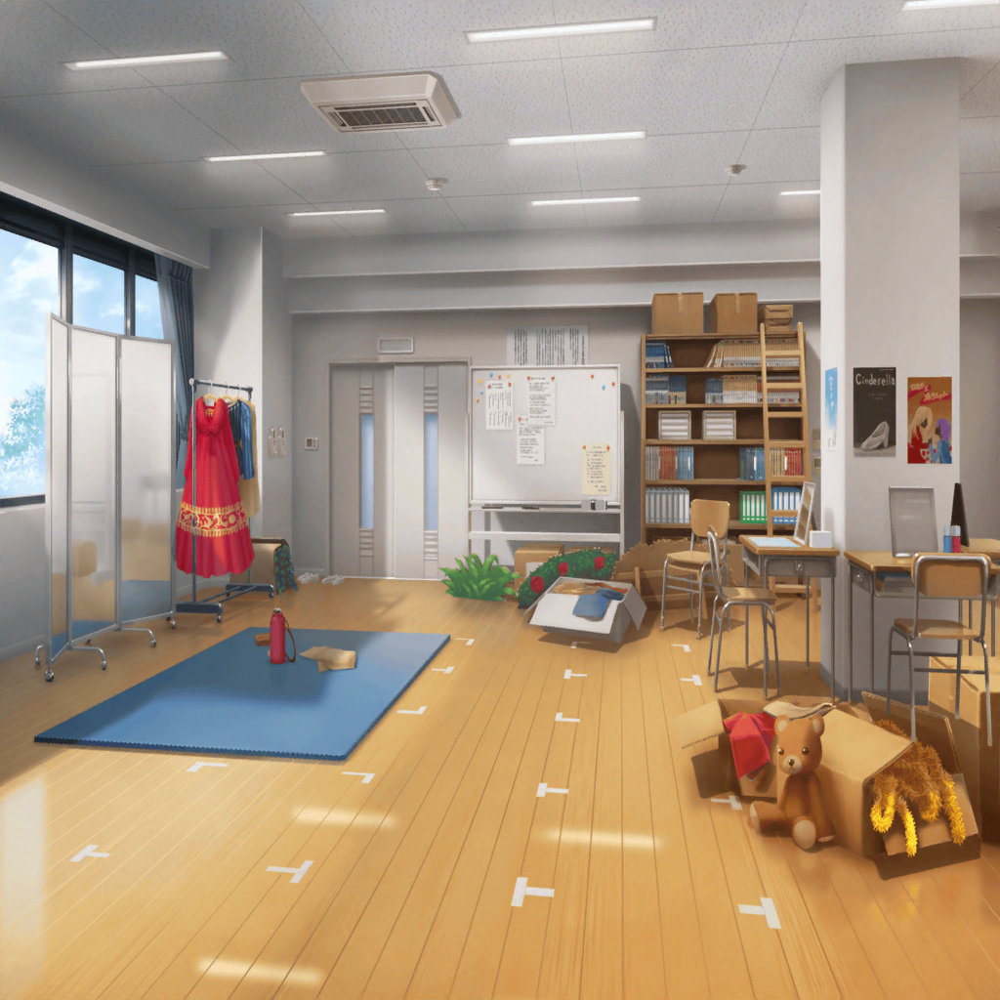
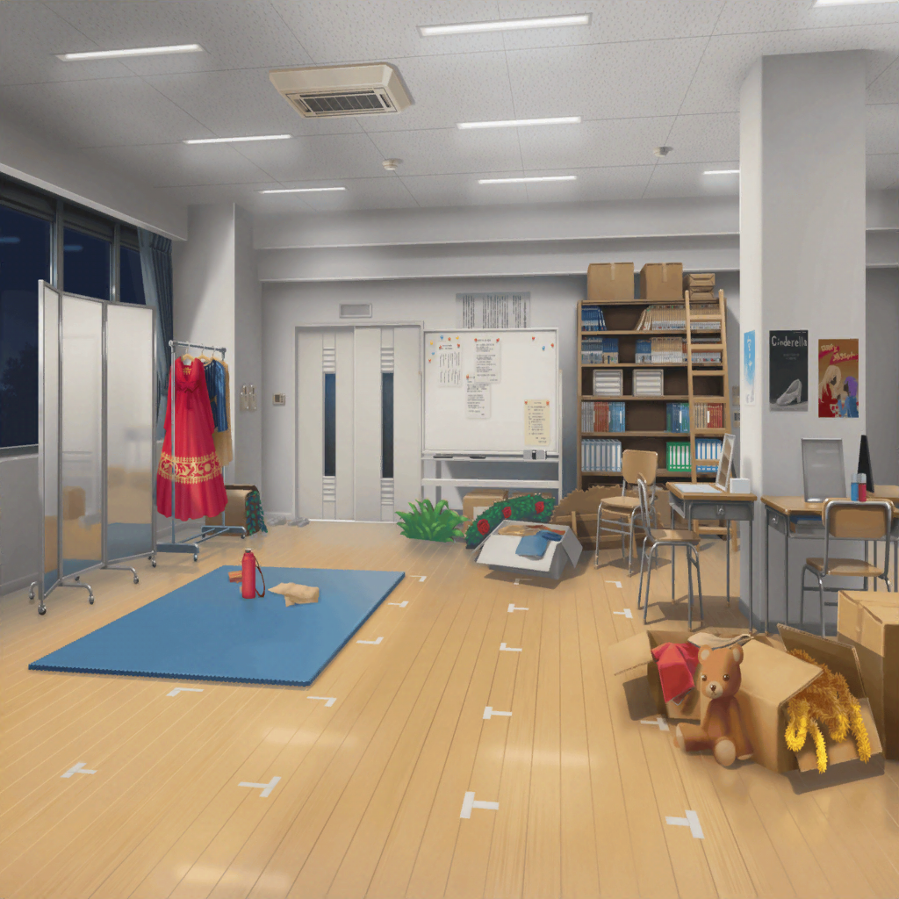

演劇部 部室
薫
さあ、楽しいダンスレッスンの時間だよ！
白鳥のように優雅な私のダンスに子猫ちゃん達もついておいで！
演劇部員達
はい！ どこまでもついていきます、先輩！
美咲
えっ、ちょっと……
こ、このダンス、ミッシェルでやるのは無理かも……
巴
左、右、左、右……でターンっと！
はぐみ
さっすがダンス部のトモちん、うまーい！
巴
はは、ありがとな。はぐみ
ひまり
左、右……右？ あれ？ 左？ どっち！？
きゃああああああああっ！？
美咲
ちょ、上原さん大丈夫？
思いっきり足がもつれてたけど……
ひまり
い、いたたたた……
うう、ダンス難しいよ〜〜！
巴
ひまり、運動は得意な方なんだけど、
複雑なやつだと覚えるまでに時間がかかるんだよな
薫
ああ、ひまりちゃん……ケガはないかい？
ひまり
だ、大丈夫です……！
ダンスのふり、なかなか覚えられなくてすみません……
薫
それなら、私がレッスンしてあげよう。
焦らず、覚えていけばいいさ
ひまり
は、はい！ 頑張ります！
練習後
ひまり
うう、全っ然覚えられなかったよぉ……
巴
そ、そんなに落ち込むなって
美咲
ほら、あたし達は演奏がメインだし、
お芝居とダンスに参加するシーンは少ないから、
きっと本番までには覚えられるよ
ひまり
う、うん……
でも、自分からやるって言ったのにこれじゃ、
薫先輩にガッカリされちゃったかも……
はぐみ
ひーちゃん、ファイトだよ……！
あ、そうだ、今日ははぐみのうちに寄ってって！
はぐみ
元気がない時は美味しいものだよ！
とーちゃんのコロッケ食べて、みんなで元気になろ！
巴
はぐみんちのコロッケか。いいな。
ちょうどなんか食べたいと思ってたとこなんだ
美咲
うん、あたしもおなか空いちゃったよ
ひまり
えへへ、ありがと、はぐ。
コロッケ食べて、元気出すね
美咲
それなら、薫さんにも声かけよっか。
練習終わったばっかりだし、まだ学校にいるかも……
……ん？ あれ？
はぐみ
どうしたの？
美咲
それが携帯がどこにもなくて……
ごめん、部室に忘れたのかも
ひまり
ほ、ホント？ 危なかったね！
学校出る前に気がついて良かったよ〜
巴
だな……って、ひまり？
そういえば、カバンはどうした？
ひまり
カバン？ ……あれ？
な、なんで、私カバン持ってないの！？
美咲
あはは……
学校出る前に気づいて良かったね
ひまり
うう、落ち込んでたからって、
カバン忘れるなんて、ダメダメすぎるよぉ〜
ひまり
はあ……しょうがない。
取りに行こっか、美咲ちゃん
巴
一緒に行かなくて大丈夫か？
ひまり
へーきへーき！
巴とはぐは先に行ってて！

美咲
……あれ？ 明かりがついてる？
ひまり
ねぇねぇ、あれ……
薫
……いや、違う。こうじゃない。
切ないシーンから情熱的なシーンに移るところなんだ。
もっと儚さを際立たせなければ心に響かない……
ひまり
薫先輩、残ってギターの練習してたんだ……
美咲
集中してて、あたし達に気づいてないみたいだね
薫
明日は演奏の全体練習……
それまでに私なりの儚い演奏を完成させなければ……
薫
ハッ、そうだ……！
ここはハムレット……ハムレットとして演奏してみよう。
悲劇のハムレットの想いをこの調べにのせて……
薫
ああ、生きるべきか死ぬべきか、それが問題だ……！
薫
こ、これだ。我ながらなんて儚い……！
また子猫ちゃんを虜にしてしまう演奏をしてしまった……！
ひまり
な、なんだか変わった練習の仕方だね……
美咲
あたし、薫さんが練習してるところ初めて見たかも
ひまり
えっ、そうなの？
美咲
薫さん、自分のパートを完成させてから、
みんなで集まってする練習に出て来るんだよね
ひまり
そうなんだ。
先輩は形から入るタイプなのかな？
何かの役になりきって練習してるみたいだけど？
美咲
あ、そういえば、前にラップの曲を作った時、
薫さん、なぜかヒップホップな格好で練習に来てたっけ
美咲
それにしても……
薫
次は情熱的なシーンだ。となれば……
ハッ、ロミオ……そうだ、ロミオになるしかない！
ああ、ロミオ！ どうして私はロミオなんだ！
美咲
それ、ジュリエットのセリフじゃん
薫
……っ！？
み、美咲とひまりちゃん！？
い、いつからそこに！？ か、帰ったんじゃなかったのかい！？
ひまり
そ、それが忘れ物をしちゃって……
あ、あはは……
美咲
薫さん、こんなふうに練習してたんだね。
なんでもスマートにできちゃうと思ってたけど、
地道に練習してるなんて知らなかったよ
美咲
なんというか、ヘンテコな……
あ、えっと、不思議な練習法だけど……
薫
あ、ああ、芝居なら台本を見ればすぐ役を掴めるけど、
楽器やダンスとなると、そう簡単にはいかないんだよ
薫
ただ、なぜか役を降ろしていると覚えが早いから、
１人の時はこうして練習しているんだ
美咲
そ、そうなんだ……
薫
とはいえ、こんなに儚くない姿は見せたくないものだね。
白鳥も水面下で必死にもがく姿は見せないものだろう
ひまり
私は練習してる先輩を見れて良かったです。
先輩がこんなに頑張ってるのを見たら、
私も頑張らなくちゃって思いましたから！
薫
ひまりちゃん……ありがとう。
舞台に上がる以上、最高のものを届けたいからね。
そのための努力なら惜しむつもりはないさ
薫
それに、今回はバンドで繋がったみんなと立つステージだ。
今、私のそばにはこんなに素敵な仲間がいる……
そのことをみんなに伝えられたら、とても嬉しいよ
美咲・ひまり
薫さん……
ひまり
……決めた！
私も残って、先輩と練習していくよ！
美咲ちゃん、巴とはぐにはそう伝えておいて！
美咲
うん、連絡はするけど……
あたしも練習に付き合っていい？
ひまり
えっ？ 美咲ちゃんも？
美咲
頼まれてなんとなく始めたことだけど……
薫さんの話を聞いていたら、
あたしも、もう少し頑張ってみようかなって
ひまり
美咲ちゃん……
薫
２人ともありがとう。
素晴らしい仲間に巡り会えて……
ああ、私は幸せ者だよ……！ 儚い……！
美咲
あ、あはは……大げさだってば